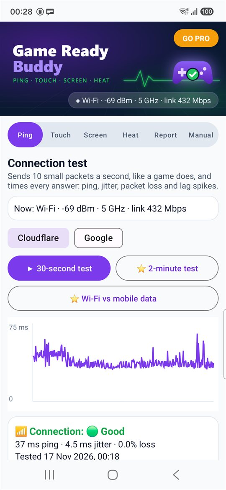
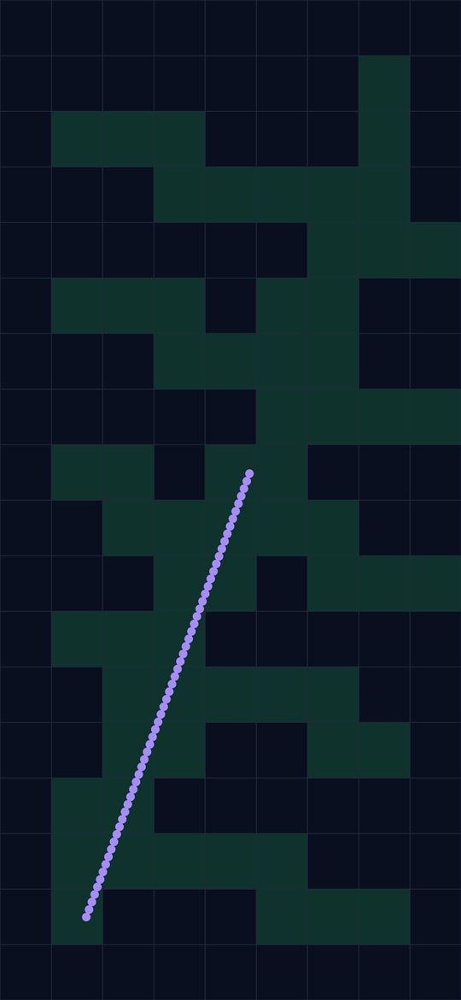
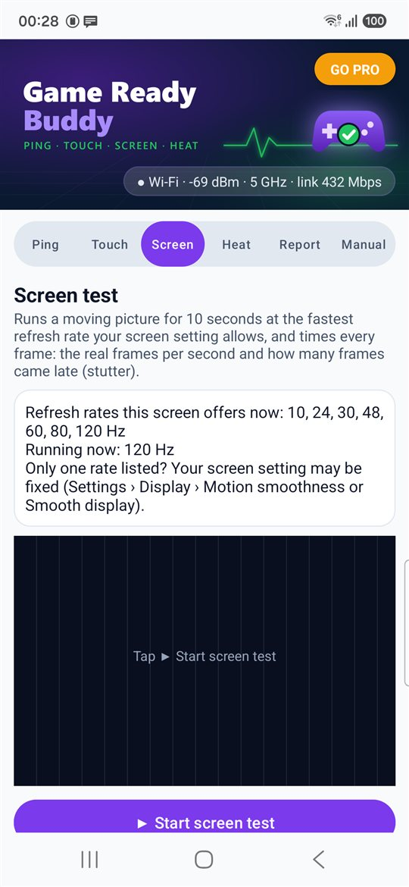
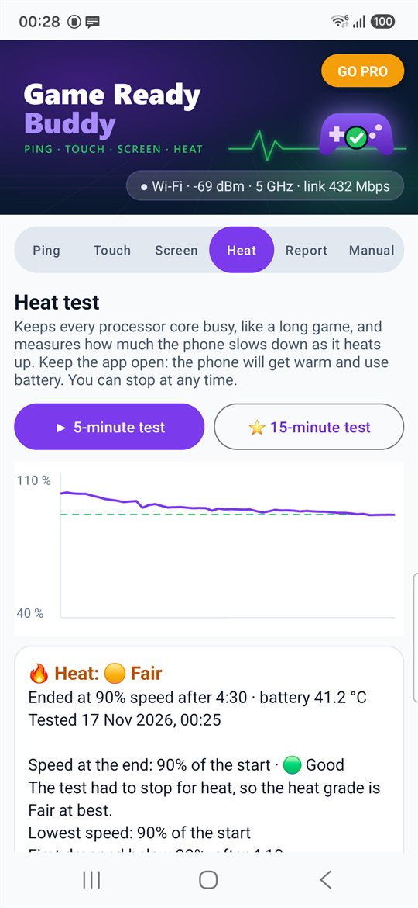
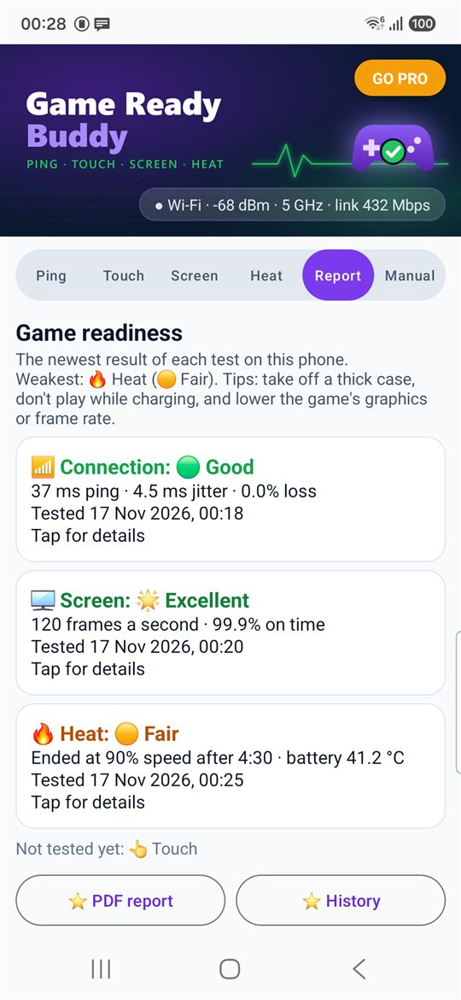

📖 Game Ready Buddy Manual
How every test works and what the grades mean
What Game Ready Buddy does
Game Ready Buddy measures the things that make online games feel smooth or laggy: your connection, the touch screen, the screen's frame rate and how the phone copes with heat. Every number is measured by this phone while you watch.
It doesn't change any settings and doesn't run in the background. It can't make your phone or connection faster by itself: it shows you where the problem is, so you know what to change.
To keep this manual, tap 📤 Share the manual at the top of the Manual tab: it makes a PDF to save, email or print.
Ping tab: connection test
- Tap ▶ 30-second test. Game Ready Buddy sends 10 small packets a second to a public server and times every answer, the way a game sends small updates many times a second.
- The first second is a warm-up and isn't counted: it wakes the phone's radio from power saving, as a running game keeps it awake.
- Ping is the middle value of all the answer times (half were faster, half slower).
- Jitter is how much the time changes from one answer to the next. High jitter feels like stuttering movement.
- Packet loss counts packets with no answer within 1 second. Lost packets feel like teleporting players.
- Lag spikes count answers more than 50 ms slower than the middle value.
- The graph shows every answer; a red mark at the top is a lost packet.
- Pick the server with the buttons: Cloudflare or Google. Both answer from their nearest site. The packets are STUN requests: the small UDP "what is my address" packets games and video calls use.
- The card at the top shows what the phone is using now: Wi-Fi with its signal and band, or mobile data.
Good to know: this measures the trip to that server only. A game's own server is somewhere else, so your ping inside a game can be higher. A 30-second test uses about 40 KB of data.
Wi-Fi vs mobile data (Pro)
- Tests Wi-Fi and mobile data at the same moment for 30 seconds, to the same server, and says which was better for games right now.
- While you are on Wi-Fi, Android switches mobile data on next to it for the length of the test, then off again. Mobile data must be switched on and the phone needs a SIM.
- If one of them can't be reached, the result says so and only the other one is shown.
- Some mobile networks can't reach the server's IPv4 address at first. Game Ready Buddy then uses the server's IPv6 address and the result says "over IPv6".
- Mobile data used: about 40 KB.
Touch tab
- Tap ▶ Start touch test. The whole screen turns into a grid.
- Slide your fingers over every part of the screen, edges too. Each square lights up green when the screen feels a touch there. A square that never lights up, however often you go over it, may be a dead spot.
- Touch samples: how many times a second the screen reports the position of a moving finger. Keep a finger moving for a few seconds to measure it.
- Most fingers at once: put 2 to 5 fingers down together to see how many the screen tracks.
- Tap ✅ Done (or Back) to save the result. Start again clears the grid.
Good to know: some phones use a faster touch rate only inside games, for example through a game booster or game mode. Game Ready Buddy shows the rate the phone gives to an ordinary app.
Screen tab
- The card shows the refresh rates your screen offers in its current setting (for example 60, 120 Hz) and the rate it runs at now.
- Tap ▶ Start screen test. For 10 seconds a moving picture runs at the fastest rate the setting allows, and the time of every frame is recorded.
- Frames per second: how many frames the screen really showed each second.
- Frames on time: frames that took more than 1.5 times the normal frame time are counted as late. Late frames are what you see as stutter.
- If only one rate is listed, the screen may be set to a fixed rate: look in Settings › Display (Motion smoothness or Smooth display).
- Power saving often limits the screen to 60 Hz: the card warns you when it's on.
Good to know: the moving picture is light on purpose, so this shows the screen's own smoothness, not the graphics power for heavy games.
Heat tab
- Tap ▶ 5-minute test and then Start. Every processor core does the same piece of maths over and over, and Game Ready Buddy counts how much work gets done every 5 seconds.
- The start speed is measured from 5 to 30 seconds in. After that, speed is shown as a percentage of the start speed.
- When a phone gets hot it slows its processor down to protect itself. The graph shows when and by how much (the dashed line is 90%).
- The result shows the speed at the end (average of the last 30 seconds), the lowest speed, when it first dropped below 90%, the battery temperature at the start and end, and the hottest heat level Android reported.
- Keep Game Ready Buddy open: leaving the app stops the test. Results under 30 seconds can't be saved.
- For your phone's safety the test stops by itself if the battery reaches 46 °C or Android reports that the phone is very hot. It won't start below 20% battery unless the phone is charging.
- Charging adds heat: the result says if the phone was charging.
Good to know: this loads the processor only. Games also load the graphics chip, so a game can heat the phone sooner than this test shows.
Report tab and grades
The Report tab shows the newest result of each test with a grade, and names the weakest area with a few tips. The tips are general advice, not measurements.
Grades are Game Ready Buddy's guide for fast online games:
- Ping: 🌟 Excellent up to 30 ms · 🟢 Good up to 60 ms · 🟡 Fair up to 100 ms · 🔴 Poor above 100 ms
- Jitter: 🌟 up to 5 ms · 🟢 up to 15 ms · 🟡 up to 30 ms · 🔴 above 30 ms
- Packet loss: 🌟 none · 🟢 up to 1% · 🟡 up to 3% · 🔴 above 3%
- Lag spikes: 🌟 none · 🟢 up to 1% of answers · 🟡 up to 5% · 🔴 above 5%
- The connection grade is the lowest of those four.
- Touch samples: 🌟 240 a second or more · 🟢 120 or more · 🟡 60 or more · 🔴 under 60
- Frames per second: 🌟 110 or more · 🟢 85 or more · 🟡 55 or more · 🔴 under 55
- Frames on time: 🌟 99% or more · 🟢 97% or more · 🟡 90% or more · 🔴 under 90%. The screen grade is the lower of the two.
- Heat (speed at the end): 🌟 90% or more · 🟢 75% or more · 🟡 60% or more · 🔴 under 60%. If the test had to stop to protect the phone from heat, the heat grade is 🟡 Fair at best.
Pro
Pro is one payment for life, with no subscription. It adds:
- ⭐ Wi-Fi vs mobile data, tested at the same time
- ⭐ 2-minute connection test (a longer test catches more lag spikes)
- ⭐ 15-minute heat test (like a long gaming session)
- ⭐ History: every test you ran, with the full result; delete one or clear all
- ⭐ PDF report of the newest result of each test, to save, email or print
Everything else is free. Tap GO PRO at the top to buy or to restore a purchase on a new phone.
Privacy
- No account and no sign-in.
- Test results are kept on this phone only. They aren't backed up to the cloud and aren't copied to a new phone.
- The connection test sends small STUN requests to the server you picked (Cloudflare's stun.cloudflare.com or Google's stun.l.google.com). They see your internet address, as with any connection, and answer with it. Nothing about you or your phone is in the packets.
- No location, no contacts, no files, no overlay, no VPN and no usage access are needed.
- A PDF only leaves the phone if you share it.
About
Game Ready Buddy v1.3 (Build 4)
Publisher: AppStack Studio
⚡ WHY GAME READY BUDDY
Game Ready Buddy only shows what it measured on your phone, and says plainly what each test can and can't tell you.
| Question |
Typical booster / ping apps |
Game Ready Buddy |
| Is my connection laggy? |
One ping number, often a single try |
300 packets in 30 seconds: ping, jitter, packet loss and lag spikes, with a live graph |
| Wi-Fi or mobile data? |
Not shown |
⭐ Pro: both tested at the same moment, side by side |
| Does my phone slow down when hot? |
"Cooling" or "boost" buttons |
Measured speed over 5 minutes, battery temperature and Android's heat level |
| How smooth is my screen? |
The number in the settings |
Real frames per second and late frames, timed frame by frame |
| Overlay, VPN or extra permissions |
Often needed |
None: no overlay, no VPN, no location, no usage access |
| Price |
Often a subscription |
Free, Pro is one payment for life (no subscription) |
⚠️ IMPORTANT DISCLAIMER
- The connection test measures the round trip to the test server (Cloudflare or Google). A game's own server is somewhere else, so your ping inside a game can be higher or lower.
- The heat test loads the processor only. Games also load the graphics chip, so a game can heat the phone sooner.
- Grades are Game Ready Buddy's own guide for fast online games, listed in full above. Game Ready Buddy can't make your phone or connection faster by itself.
- Game Ready Buddy is not affiliated with any game, game maker, phone maker or network provider.

1. Ping
Ping, jitter, packet loss and lag spikes, with every answer on the graph.

2. Touch
The whole screen as a grid: every square that answers lights up green.

3. Screen
The refresh rates your screen offers; the test then times every frame.

4. Heat
How much the phone slows down as it heats up.

5. Report
The newest result of every test, with a grade.
Screenshots: real measurements on a Samsung Galaxy S24.